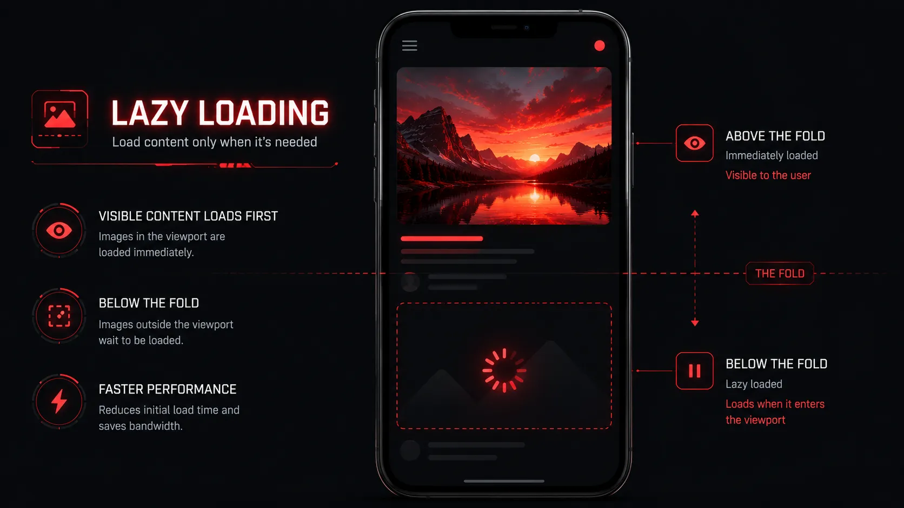

In modern web development, converting your heavy JPEG files into modern formats using a powerful WebP converter is step one in image optimization. But what if you have already done that, and your website is still failing Google's speed tests?
To build a truly blazingly fast website that dominates organic search rankings and delights users, you need to implement a holistic optimization strategy. This involves how you deliver, load, and render those images within your HTML code. Here is the master strategy for complete image optimization in 2026.

1. Adopt Next-Gen Formats First
Before writing any advanced code, you must ensure your base files are light. You should never be serving standard PNGs or high-quality JPEGs directly to web users. Instead, utilize Webp Moder by Shekh to batch convert your entire media library to the WebP format. This single step immediately sheds 30% to 50% of your website's total payload weight.
2. Implement Native Lazy Loading
Imagine you publish a massive 3,000-word blog post containing 15 high-quality WebP images. By default, when a user opens that page, their browser tries to download all 15 images immediately, even the ones at the very bottom of the article. This creates a massive network bottleneck.
The solution is Lazy Loading. By adding a simple HTML attribute, you tell the browser to delay downloading off-screen images until the user actually scrolls down near them.

3. Use Responsive Images via HTML `srcset`
A desktop user with a 4K monitor needs a large, high-resolution image to prevent blurriness. However, a user on a 300-pixel wide smartphone does not. Serving a massive 2000px wide image to a tiny mobile screen is a disastrous waste of cellular data and processing power.
By using the HTML srcset attribute, you provide the browser with multiple sizes of the exact same image. The browser's engine is smart enough to detect the user's screen size and download only the appropriately sized file.
4. Utilize a Content Delivery Network (CDN)
Physical distance creates latency. If your website is hosted on a server in New York, a user visiting from London will experience a slight delay as the image data travels under the ocean. A Content Delivery Network (CDN) solves this physical limitation.
A CDN stores cached copies of your optimized WebP images on servers scattered all around the globe. When the London user requests your website, the CDN serves the image from a server located in London, not New York. This drastically cuts down on transmission time.
"Combine next-gen WebP formatting, native lazy loading, responsive HTML sizing, and global CDNs, and your website will pass Google Core Web Vitals with absolute perfection."
Start With The Foundation
You cannot optimize a heavy image. Compress your assets instantly using our private browser-based tool before writing your code.
⚡ Convert to WebP for FreeFrequently Asked Questions
Should I lazy load my hero image?
No! You should never lazy load images that appear "above the fold" (visible immediately when the site loads). Lazy loading a hero image will negatively impact your Largest Contentful Paint (LCP) score. Only lazy load images that require scrolling to see.
Does WordPress do this automatically?
Modern versions of WordPress automatically add loading="lazy" to your images and generate srcset sizes when you upload to the media library. However, you still need to use a WebP converter to ensure the base files are lightweight.
What is the difference between lazy loading and a CDN?
Lazy loading tells the browser when to download the image (delaying it until needed). A CDN determines where the image is downloaded from (serving it from the closest geographical server). Both should be used together.
Final Thoughts
Website speed is an ongoing battle, but images are usually the lowest-hanging fruit. By integrating Webp Moder by Shekh into your workflow to shrink file sizes, and writing smart, responsive HTML code, you will provide a seamless, lightning-fast experience that keeps users engaged and search engines happy.